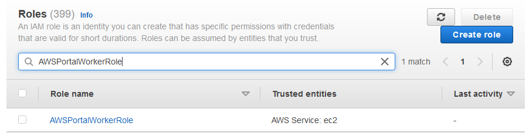
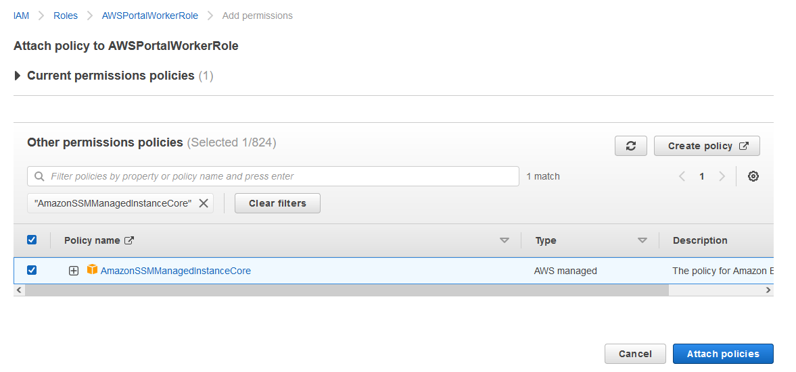
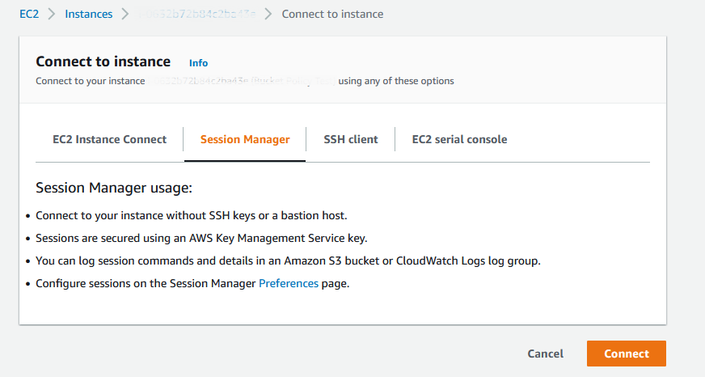

Note
While AWS Portal can enable cloud rendering in Deadline 10, AWS Deadline Cloud is a newer offering that has been built specifically for the cloud. It is a fully managed service that does not require installation or maintenance of infrastructure (e.g., repository, database, or license server). Worker fleet auto-scaling, asset synching, and licensing are all managed natively within AWS by Deadline Cloud. See here for more information on Deadline Cloud and its capabilities.
Connecting to AWS Portal Worker with Session Manager¶
If you would like to connect to an AWS Portal Worker using AWS Session Manager use the following steps.
Add Session Manager Permissions¶
In the AWS Console, navigate to the IAM Service and select the Role section. In the Search box, enter ‘AWSPortalWorkerRole’ and click on it.
Under Permissions, click on the ‘Add permissions’ button and ‘Attach policies’.
Search for ‘AmazonSSMManagedInstanceCore’, select it and click the ‘Attach policies’ button.
Connect to the Instance¶
Now you are able to connect to your instances with Session Manager. The simplest way is through the EC2 console. Navigate to your instance and click on ‘Connect’. Choose the ‘Session Manager’ option and click ‘Connect’. That will open a session in your webbrowser on your instance.
Cleanup¶
When you’re done connecting to your instance, it’s best practice to remove this policy from the Role. To do that, navigate back to IAM, and find the ‘AWSPortalWorkerRole’ Role. Under ‘Permissions’, select the ‘AmazonSSMManagedInstanceCore’ policy and click ‘Remove’ then ‘Delete’.